The Abaqus software version 2017 installed in IVY cluster is integrated with the job scheduler SLURM.
The procedure for submitting Abaqus jobs (along with User Subroutines) through the job scheduler (SLURM) on IVY cluster is as follows
(to run without user subroutine, skip steps 5 and 6):
Login to the head node of IVY Cluster (10.1.2.3)
create a directory in your home folder for the job you want to execute, with following command: mkdir job1
Switch to this directory with cd job1
Place the input file (eg: job1.inp) and user subroutine file (job1.f) in this job1 directory
Execute the following command to find present working directory: pwd This will return the absolute path for your job folder
Eg: /home/<group>/<user>/job1
Issue the following command for compiling the user subroutine: abq2017 make library=job1.f directory=[absolute path to job folder]
Replace [absolute path to job folder] with the output of "pwd" command in step 5
Eg: abq2017 make library=job1.f directory=/home/<<group>/<user>/job1
Note: the value assigned to directory attribute above must be the absolute path to the job folder "job1"
Submit Abaqus job with the command below:
abq2017 job=<input file name> cpus=<no. of cpus>
Eg: abq2017 job=job1 cpus=4
The above command will submit the job through SLURM and allocate the number of cpus specified with the "cpus" option. The “job id” of
the submitted job will be displayed.
Eg: Submitted batch job <job id> Note: For running the job on a single node of IVY cluster, the value of “cpus” option can be from 1 to 24,
as there are 24 CPU cores in 1 node of IVY cluster. To run on multiple nodes, the value of “cpus” option must be a multiple of 24 i.e. 48, 72, 96 …
You can monitor the job with the following command: squeue
When the job is running, the output files and temporary files will be created in the user’s scratch directory
(i.e. /apps/scratch/<group>/<user>). After the job completes, the output files (i.e. job1.msg, job1.odb, job1.dat etc.)
will be copied to a job specific sub-directory in the job submission directory of the user’s home folder.
Eg: /home/<group>/<user>/job1/<job id>_abaqus_<job name>
To monitor the job's output and log files during the job run, you can switch to the scratch directory with the following command: shm
To switch back to home directory uhm
To list the files in scratch directory: ls $SHOME
ABAQUS
Procedure to invoke ABAQUS on workstations.
Abaqus Versions available in workstation:
Abaqus 2016
Abaqus 2017
Procedure:
Go to the Start Menu, and click on “All Programs”
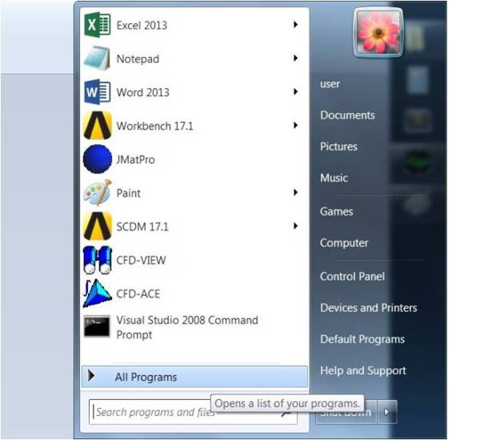
Then navigate to the “DassaultSystemes SIMULIA Abaqus CAE 2016” or “DassaultSystemes SIMULIA Abaqus CAE 2017” folder
(depending on the Abaqus version you want to use) and click on it.
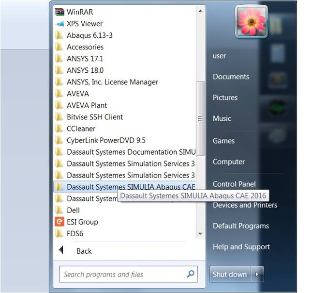
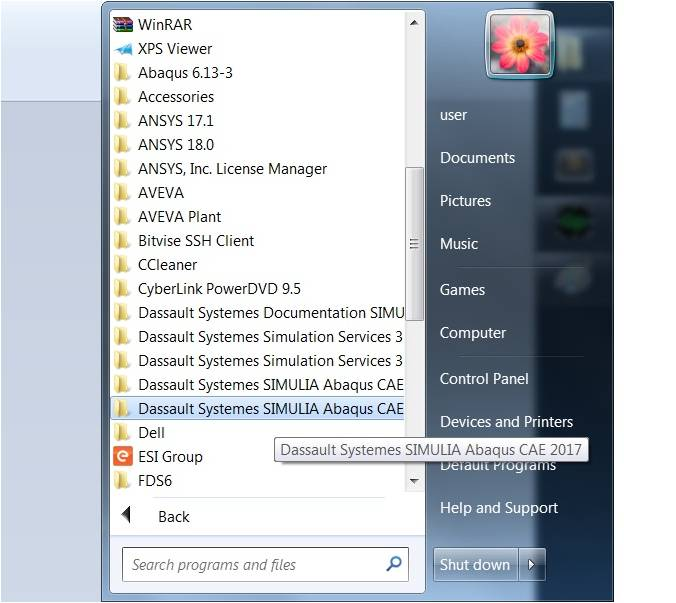
For using the Abaqus CAE, click on “Abaqus CAE”
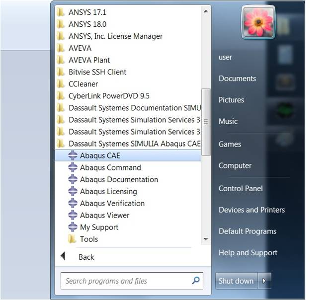
The licenses are checked out and the following Window is displayed, indicating the no. of licenses remaining
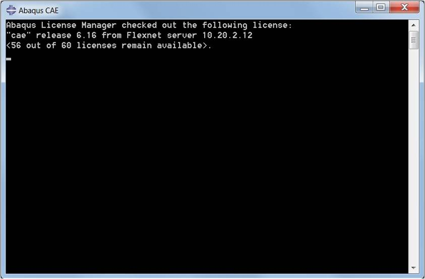
After some time the Abaqus CAE loads as below:
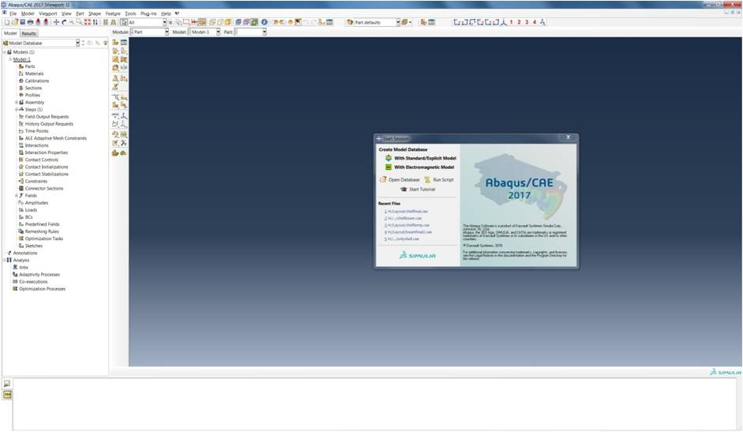
For using the Abaqus Viewer, click on “Abaqus Viewer”. The licenses are checked out and the following Window is displayed,
indicating the no. of licenses remaining 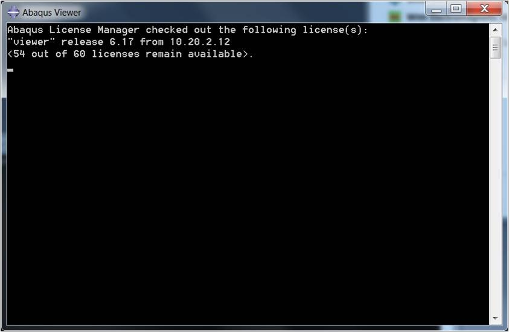
After some time the Abaqus Viewer loads as below:
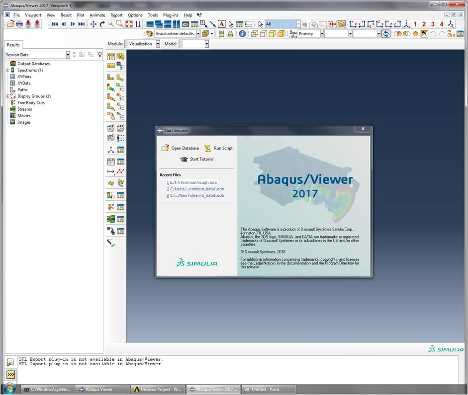
Procedure to invoke Thermocalc in Workstations
Users can run Thermocalc 2016a by clicking the Thermo-Calc-2106a icon on the desktop as depicted in the following screenshot.
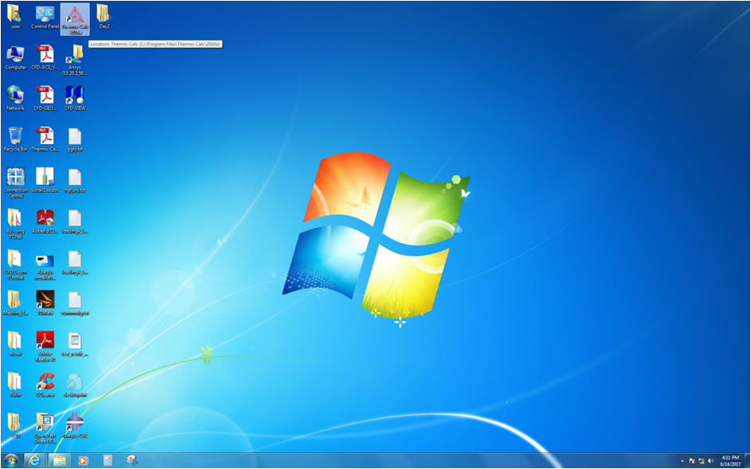
Procedure to run VNL and ATK
VNL can be launched by running ‘vnl’ from the command line. Note: Before running VNL user must login to a GUI session on the head node first. # vnl
Running ATK scripts is possible through VNL or through the command line. For invoking through command line, start it a below:
# atkpython script.py > logfile.log
For running the parallel version it can be invoked as below:
# mpirun -n 4 –f machinefile atkpython test_mpi.py
For running through slurm
Take a copy of /home/slurm_templet/slurmScriptVnlAtk.sh to the user home directory and modify Line no 8, 9 and 20 as required.
Then submit the batch job by running the following command:
# sbatch –N <no. Of nodes to use for this job> slurmScriptVnlAtk.sh
Procedure to run feff:
Sequential running:
Enter into the examples directory where the feff.inp file is present and run feff by typing feff at command prompt as below:
$feff
feff will open the feff.inp file and start calculations.
Final output will be in xmu.dat, which can be viewed through gnuplot
Parallel running:
Procedure to invoke ANSYS in Workstations
Users can run ANSYS by clicking the workbench from the start menu as depicted in the following screenshot.
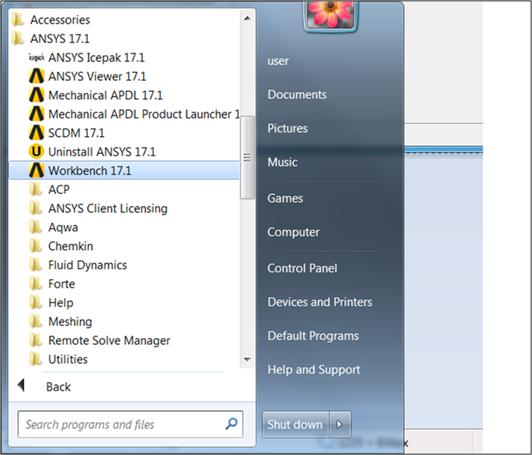
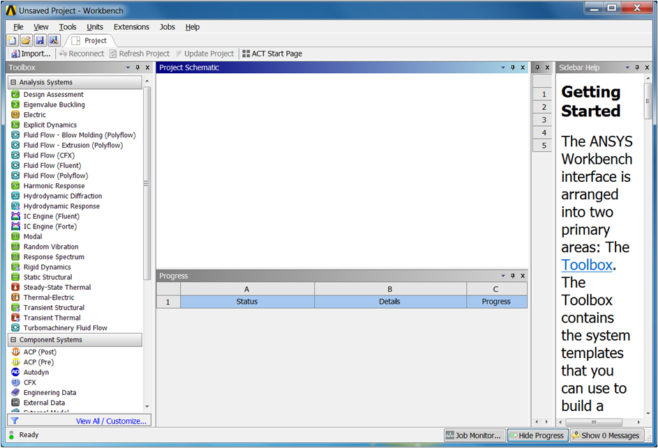
Procedure to invoke SYSWELD in Workstations
Users can run SYSWELD by clicking the workbench from the start menu as depicted in the following screenshot.
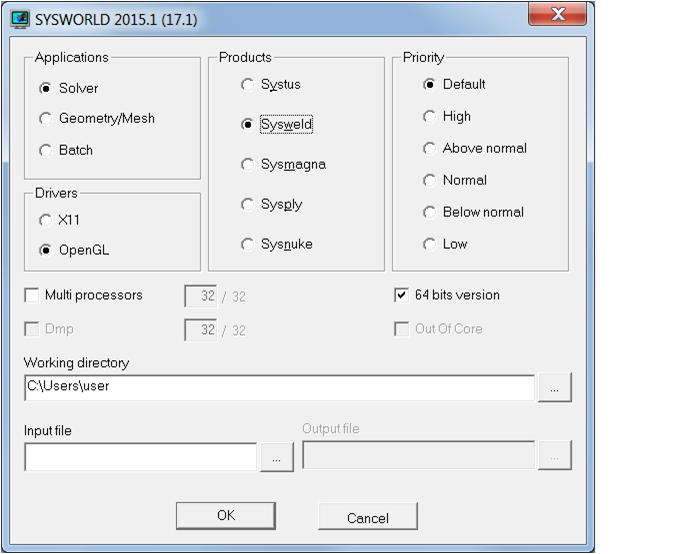
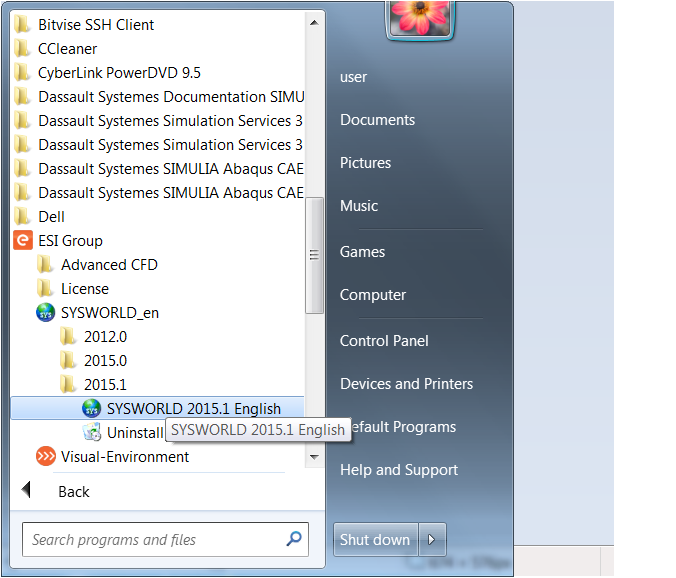
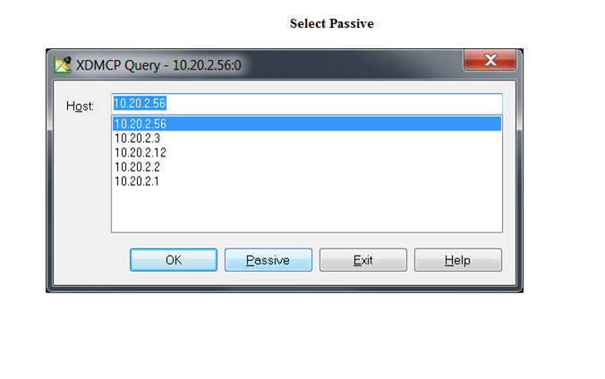
CFD-ACE Versions available in workstation:
CFD-ACE 2015
CFD-ACE 2016
Procedure:
Go to the Start Menu, and click on “All Programs”
Then navigate to the “ESI Group” icon or folder and click on it. Then click on the Advanced CFD submenu.
This will show “Advanced CFD 2015.0” and “Advanced CFD 2015.0” folders. Click on the version you want to use.
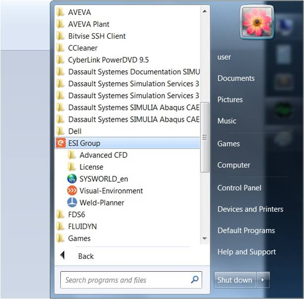
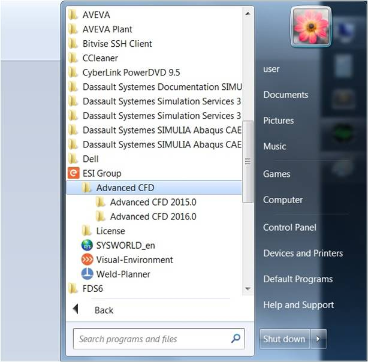
For using the CFD-ACE, click on “CFD-ACE”
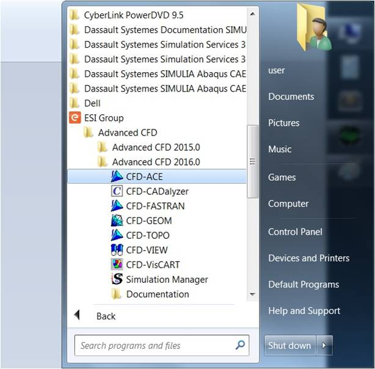
The following Window is displayed:
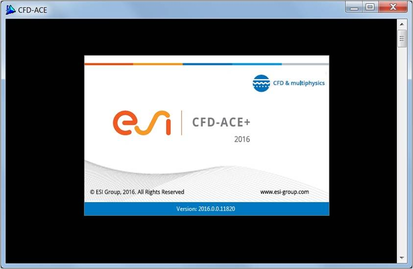
After some time the CFD-ACE loads as below:
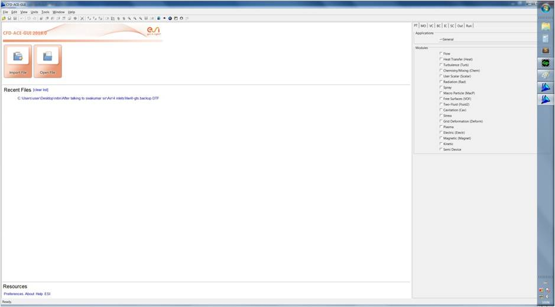
ABAQUS
The Abaqus Unified FEA product suite offers powerful and complete solutions for both routine
and sophisticated engineering problems covering a vast spectrum of industrial applications.
In the automotive industry engineering work groups are able to consider full vehicle loads,
dynamic vibration, multibody systems, impact/crash, nonlinear static, thermal coupling,
and acoustic-structural coupling using a common model data structure and integrated solver technology.
CFDEXPERT
CFDExpert is an advanced multi-purpose CFD software for engineering design.
It has end-to-end capabilities from design to analysis. It provides accurate, fast, robust and efficient CFD solutions.
CFDExpert enables engineers to build virtual prototypes and simulate the performance of proposed and existing designs,
thereby allowing them to improve design quality in a cost effective and time saving manner.
Applications
Automobile, Aerospace & Marine Applications
Nuclear & Oil/Gas Industry
Turbomachinary, Pumps etc
HVAC & Refrigereation
Electrical Appliances
Sports & Health Care
Building Design optimizations
Environmental Engineering
COMSOL
The COMSOL Multiphysics simulation environment facilitates all the steps in the modeling process – defining your geometry,
meshing, specifying your physics, solving, and then visualizing your results.
It also serves as a platform for the application specific modules.
Product suite
1. ELECTRICAL
AC/DC Module ver 6.1
MEMS Module ver 5.31
2. MECHANICAL
Heat Transfer Module ver 6.1
Structural Mechanics Module ver 6.1
Nonlinear Structural Materials Module ver 5.31
3. FLUID
Computational Fluid Dynamics (CFD) Module ver 6.1
Microfluidics Module ver 4.4
Molecular Flow Module ver 4.4
4. CHEMICAL
Chemical Reaction Engineering Module ver 6.1
Electrodeposition Module ver 4.4
Corrosion Module ver 6.1
Electrochemistry Module ver 6.1
5. MULTIPURPOSE
Optimization Module ver 5.31
Material Library ver 5.31
Particle Tracing Module ver 6.1
Wave Optics Module ver 5.31
Multibody Dynamics Module ver 4.4
MATLAB ver 5.31
AUTOCAD ver 6.1
CAD Import Module ver 6.1
HyperMesh
Altair HyperMesh is a high-performance finite element pre-processor to prepare even the largest models,
starting from import of CAD geometry to exporting an analysis run for various disciplines.
Solid Geometry Modeling
Shell Meshing
Model Morphing
Detailed Model Setup
Surface Geometry Modeling
Solid Mesh Generation
Automatic Mid-surface Generation
Batch Meshing
LS-DYNA
LS-DYNA is a general-purpose finite element program capable of simulating complex real world problems.
It is used by the automobile, aerospace, construction, military, manufacturing, and bioengineering industries.
Applications
Automotive Crashworthiness & Occupant Safety
Metal Forming
Aerospace
Multiphysics
Incompressible CFD
Electromagnetics
CESE/ Compressible CFD and Chemistry
Mathematica
Mathematica is a computational software program used in scientific,
engineering, and mathematical fields and other areas of technical computing.
Mathematica Features
Core Algorithms
Numerical Computing
Graphics & Visualization
Data Science
Application Areas
PHOENICS
Phoenics which simulates processes involving fluid flow, heat or mass transfer,
chemical reaction and combustion in engineering equipment and the environment.
PHOENICS is used in nearly every branch of engineering and science in which fluid flow plays a key role:-
Aerospace
Automotive
Chemical
Combustion
Electronics Cooling
Metallurgical
Power Generation
Turbomachinery
STAR-CD
STAR-CD can perform reliable analysis of complex, multiscale transport phenomena in realistic industrial systems.
STAR-CD is a mature high-performance computational fluid dynamics (CFD) environment.
SYSWELD
SYSWELD is the leading software for the simulation of heat treatment,
welding and welding assembly processes, taking into account all aspects of material behavior, design and process.
WIEN2K
WIEN2k perform electronic structure calculations of solids using density functional theory (DFT).
It is based on the full-potential (linearized) augmented plane-wave ((L)APW) + local orbitals (lo) method,
one among the most accurate schemes for band structure calculations.
WIEN2k is an all-electron scheme including relativistic effects and has many features.
Calculated properties
Energy bands and density of states
electron densities and spin densities, x-ray structure factors
Baders's "atoms-in-molecule" concept
total energy, forces, equilibrium geometries, structure optimization, molecular dynamics
Phonons, with an interface to K.Parlinski's PHONON program
electric field gradients, isomer shifts, hyperfine fields
spin-polarization (ferro- or antiferromagnetic structures), spin-orbit coupling
x-ray emission and absorption spectra, electron energy loss spectra